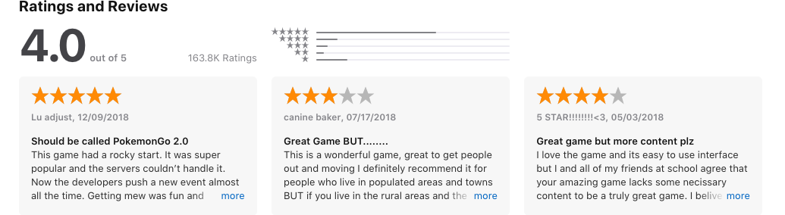

I have started to upload my website to Github and i have also started to write the code so that i can see the site on the web.

I have given a screenshot of the code and the below screenshot is the look of the website so fair

IT plays a massive part in any working business. Not only for your everyday use but for the little things like data management, learning, getting information about anything really quickly and so much more. IT has made a massive improvement to the way we look at business. The most notable is that it has sped up the way we work.
For example, Microsoft products allow us to edit text documents on the fly or even search for any keyword in a document. We are able to write text so fast and get information in a structured format and that so many people can access it at one time. This has also brought on the development for servers and the software to run them servers. The ICT business is one of the fastest growing industries on the planet and it is only getting bigger.
Another purpose of IT in modern business to expand the business though advancement and website development. If your business has a good website then they are more likely to get some kind of business as you look professional. You can also communicate much better with clients and new clients. Another positive for the ICT world is we can offer fast shipment options to move products over a larger area and get them to people much faster.
Most businesses are subject to security threats and technology is being used to protect financial data and confidential information. Computers allow for a simple passwords so that they can protect they forthcoming projects or any of they information.
There are many tools that help us to make Projects better these tools are Websites, Apps and some hardware. Websites help us get information and give information about products or a product or service you are selling. Another way to make a project have some success is with great teamwork and be able to problem solve. The Apps that we are using to make our life easier is Slack. Slack has helped us to make a group chat where we could chat and pass on images and other useful information. We used slack to set up meeting and then get an idea what we were doing during the day. We have also used a website called Trello which we used to get an outline all the tasks that we wanted to do and when we finished them tasks they would be marked off the to do list so we can then move to focus on something else or more important.
Teamwork is one of the most important parts of digital projects. This is because each person can focus on one given task or multiple people can focus on one task and work together on that task.
The way I'm going to make my website is to carefully consider my options and use Trello to help plan what I'm going to do during the day and my time. Using cards for each task that needs to be done, I’ll break these down into simple tasks as possible and use the Kanban method to keep track of them - i.e, tasks to do, tasks I’m currently working on, and tasks I’ve completed, presented below as ‘to do’, ‘doing’, and ‘done’.
I have started to upload my website to Github and i have also started to write the code so that i can see the site on the web.
I have given a screenshot of the code and the below screenshot is the look of the website so fair
here are many risks and drawbacks when it comes to developing projects. Any one of them can prove fatal to a business. Some of the risks are someone trying to hack your product to sell it on as their own work. Not only hacking it can also be where someone just flat out steals your idea and tries to sell it as their own. This has happened as cross every IT industry. One Main example is when PUBG.corp tried to sue Epic games for the creation of Fortnite. PUBG claimed that Epic games stole their idea of a battle royal game and said that it hindered there business and game. However PUBG Corp have since withdrawn its lawsuit with reasons unknown.
Another big risk is that making a big project has a very high development cost. It is vital that you keep track of all your outgoing expenses and not to go over budget. We have all heard of loads of products being scrapped for having gone way over budget and still can't afford to finish the product.
When I'm picking what software I want to use I have to take into consideration many factors before I can choose what software I want. The first thing I need to consider is if the software I’m going to use has all the functions that will help me to create this specific software or project I want to make.
There are many examples of great apps that can help us in the development of other apps. Here are some…
Appery.io
“Appery is a cloud-based mobile app builder that you can use to create apps for Android or iOS, and it includes Apache Cordova (Phone Gap), Ionic, and jQuery Mobile with access to its built-in components.”
TheAppBuilder
“TheAppBuilder provides a suite of apps to suit employees, clients, events, and brochures, with two different approaches available. This might be the platform to go with if you are designing an app as an intranet for a company. You can build the app using the online toolkit, and either the training provided or TheAppBuilder itself will work with you to define and build the structure of the app and populate it with initial content.”
The text in “” marks are taken from google and here is the reference page https://mashable.com/article/build-mobile-apps/?europe=true
When it comes to looking at what apps best suit my project i would normally look at a number of different ways places to check what features may suit my app.
The first place would look is what some of the current users think of the product.

The second place i could look is talk to some of my colleagues and friends and see what products they use to make there apps or what websites they use to help them make their apps or plan they their apps.
The software I used to develop my website consisted of four main programs:
Visual Studio Code, Github, Trello, and Google Docs.
I used VSC to write the code for the website in a HTML format. I started to write the base for all the content and then used CSS file to design the way the app looks. CSS was used to create the colours, fonts and margins. VSC has a built in command line so I’m able to commit my work to Github. While on Github I was able to upload HTML and CSS code and create a working website through Github Pages. Trello was used as a mind map and to get a clear understanding of what tasks I was doing and what still needed to be finished. Finally I used Google docs to write up my assignments and then get a full idea of what context I wanted to add into my website. I copied and pasted all the text into VSC and then that laid out the foundation for the HTML. Google docs also gave me an autosave function so that I could be safe if anything happens to my work.
When a company is given or garhers any kind of information, they have to comply with the General data protection regulations. This is important because they don't want to be risking any kind of lawsuit. The regulation was introduced in 2018 and it is the framework to make individuals rights clearer to both the companies and themselves. It was also set up so that it is much easier to enforce the regulations. In order to comply with the regulations businesses must not make the personal information of any individual, client or otherwise, without express consent, and is not permitted to collect data without specifying it to the individual or use it in any way other than what they claim. (copyright protects your work, you will feel safe when you see this symbol ©)
Review and adapt the ongoing use of IT tools and systems to make sure that activities are successful
The tools I used to make my website were, Visual studio and Trello. Using VSC I was able to use its features to write a baseline for how I wanted to set up my website. I enjoyed using VSC but an online based code editor such as CodePen would have given me more flexibility to work from home. Using Trello I was able to use it as a great guideline and get a great outline of all the tasks I need to finish. I also used Trello to brainstorm my ideas and time them out. I utilised this well for this project by mapping out any outstanding tasks that needed to be done, but feel it is a better project management tool when working in teams.
I’m kind of happy on how the website turned out. If I had more time to be able to configure the website and use all the features that I had been taught then it could look so much better. The biggest problem I faced was that I could not always find the time to be able to configure the site. If I could go back and change it would put so much more time into looking at the indervisal code ad writing it much better. I spent way too much time trying to get my head around writing all the information I never got around to writing the fancy code to make the site look clean and amazing. Due to limited knowledge and skill I could only achieve a simple blog style website, next time I would invest more time and energy into learning coding skills so I would be able to make my website more complex.
Overall the project has been a great way to learn how to code and what needs to be done to make a website. The tools we need and the skills that we learn on how to use the tools. When I started to plan for the website, I used Trello to plan out where I was going to start and some of the information I wanted to include on the site. I set it up as ‘to do, doing, done’. Although it’s simple the project is fit for purpose, as it showcases my experience and skills.

The best thing about working alone is that it helps you to understand more information at your own pace and then work on any mistakes that you have made and fix them at your own pace. When you are working in a team you can split the work up and learn from each other or get some information as a group. In terms of splitting the work one person can work on writing all the code for the website and another group or individual can work on writing all the information for that same site. You could go much further and get an artist to design all the art for the site and the layout.
When I first came onto the course I found that we were going to be using Macs as our primary computer. After the first day I went home and brought in my own mouse and keyboard as im not a huge fan of the way the Mac trackpad and keyboard feel. I just feel like the mac keyboard has no feel to it and the buttons are very stagnant. I feel uncomfortable with the design of the trackpad as i am not familiar with it. By using my own technology I was able to work much quicker and better and this greatly improved my own productivity and efficiency.
Slack is a software where we can communicate with people. It is used to transfer documents or make group chats where we can communicate or pass on information for a given project. Slack offers both a desktop website and a Mobile app so you can use it no matter where you are or what platform you are on. It's just a great way to get information to each other and get in on the same page when working on a project.